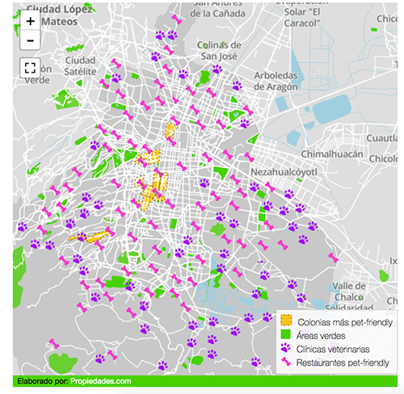

Data visualization designer
Trabajo en el blog del portal Propiedades.com junto a un equipo multidisciplinario que ayuda a los usuarios a tomar decisiones informadas sobre la industria inmobiliaria a través de artículos basados en datos.
Me encargo tanto del diseño como de la implementación de infografías, mapas y gráficas que sirven como apoyo a los artículos del blog.
Estos son algunos ejemplos de proyectos en los que he colaborado:
-

Las 10 colonias más pet-friendly de la CDMX
Propiedades.com/Blog
Mapbox Studio -

10 colonias para "librar" el gasolinazo
Propiedades.com/Blog
Mapbox + JS -

¿Me conviene comprar o rentar?
Propiedades.com/Blog
Mapbox + JS -

¿Eres foodie? Múdate a estas colonias
Propiedades.com/Blog
Mapbox JS -

Si trabajas en Santa Fe, ¿te conviene vivir en Toluca?
Propiedades.com/Blog
Mapbox + JS -

¿Cuánto cuesta vivir en un Barrio Mágico?
Propiedades.com/Blog
Mapbox + JS